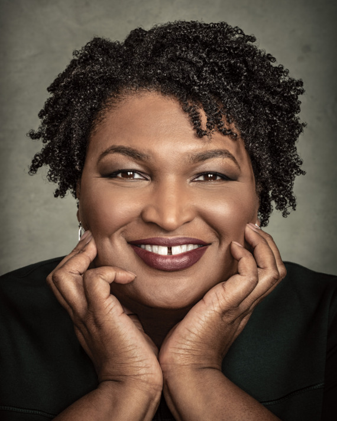
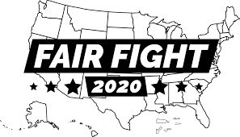

Fair Fight has a variety of missions in both the state of Georgia and in elections across the country: Fair Fight brings awareness to the public on election reform, advocates for election reform at all levels, and engages in targeted voter registration and other voter outreach programs and communications.

Voter Purging in GA
In 2018 the state of Georgia witnessed an election that was strategically planned to result in favor of the Republican candidate and our current governor, Brian Kemp. Prior to winning the 2018 election, he was the Georgia Secretary of State, where he had the ability to systematically cancel voter registrations and close down specific polling stations in GA, particularly those in lower income, rural areas. Many Georgians were not able to vote for a variety of reasons: their voter status was randomly deactivated and they were not notified; they were told their names were not spelled exactly the same way on their ID and voting card and this was made it impossible to verify their identity (an issue that largely impacted Latinx voters in GA); or the place they had voted for years prior was no longer available to them and they did not have a means to reach another voting station. It is important to recognize that these changes directly affected people of color, specifically black people in GA. Statistically, the people whose registrations were randomly cancelled were likely to vote for Abrams, his opponent, so it is no mistake that these irrational and random limitations were placed only on specific GA voters.
- Voter Issues in 2018
- Unprocessed absentee ballots
- Cancelled registrations with insufficient notification
- Removing fundamental voting polls from lower SES communities
You can click this link to watch a short documentary made by Brave New Films showing how voter suppression played out in the 2018 gubernatorial election: Suppressed: The Fight To Vote
The Formation of Fair Fight
After Kemp won in November of 2018, Abrams recognized that if something was not done to stand up again voter purging and suppression it would only happen again in the next election. She decided that the most productive thing she could do, in addition to filing a federal lawsuit regarding the unjust nature of the election, was to start a non-profit called Fair Fight, which aims to improve voter education and engagement in GA, as well as get the ball rolling on election reform. Under her non-profit, Fair Fight, exists two different sectors known as Fair Fight Action and Fair Fight PAC. Fair Fight Action is a non-partisan wing that works to shed light on voter issues in GA as well as make efforts to increase voter engagement and fight against future purging. Fair Fight PAC is the side of Fair Fight that will endorse specific candidates as well as participate in fundraising for certain parties and/or candidates. While these two sectors of Fair Fight are working hard to improve GA and ensure the right for EVERY Georgian to vote (no matter their party), Abrams also wanted to create a way for students to be involved in this movement, as students were heavily affected by the voter suppression of 2018 when many of their registrations were cancelled without notification or their absentee ballots were not processed in time to be counted.
Fair Fight U
Because of this goal to specifically engage with college students, Abrams came up with the idea of Fair Fight U (FFU), which is designed to exist under the non-partisan wing of Fair Fight and to act as a student chapter of the non-profit. Earlier this semester, I got the position of Chapter Manager of the UGA FFU chapter, and Fair Fight has since created chapters at other GA colleges like Spelman, Morehouse, Emory, Kennesaw State, and more. I am particularly passionate about this cause because I believe that the right to vote is a fundamental component of democracy, and without the assurance of it for all people we cannot have fair elections. Furthermore, I know many people who were personally affected by the voter suppression we saw in 2018, and I do not want to let history repeat itself. I also believe that voting rights should not be a partisan issue and instead should simply be acknowledged as an essential one. Everyone should care about voter issues because for most people voting is the one time we are truly able to in use our voice in our democracy. Our ancestors did not work so hard to attain the right to vote for women and people of color only for that right to be taken away again using loopholes to further oppress people on the basis of their race, class, gender, or sexual orientation. I am currently working on campus to spread awareness of the 300,000 planned voter purges that are likely to happen before the 2020 election, as well as to provide resources for people who need help with the voter registration process and more.
Click this link to learn more about Fair Fight's mission: Fair Fight
See below for a list of current FFU chapters at colleges in Georgia and the cities where they are located:
| School | Location |
|---|---|